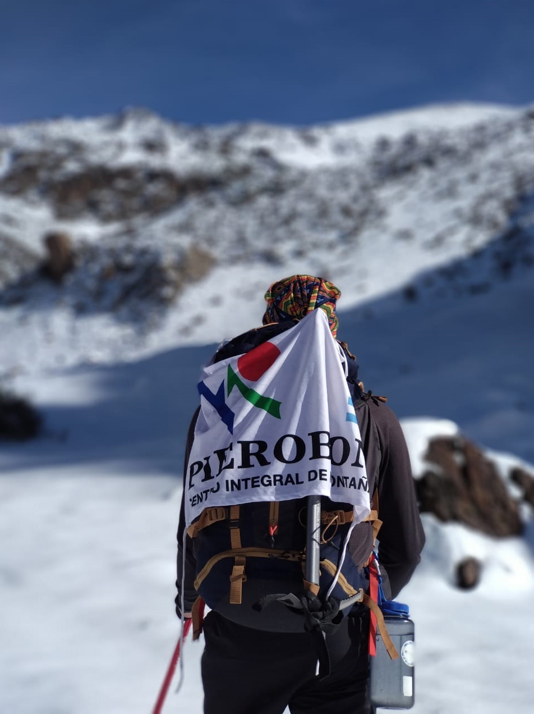

SOBRE NOSOTROS

Desde nuestro comienzo, en 1991, nos motiva que el hombre vuelva a la naturaleza, camino irretornable al conocimiento de sí mismo. Nosotros, encontramos en las actividades de montaña este reconocimiento y encuentro interior, y nuestro objetivo se centra en que cada uno de nuestros amigos y clientes logren también éste «encuentro» en la montaña.
Siempre que esto ocurre, cuando compartimos las experiencias vividas con nuestros clientes, comprobamos que nuestro objetivo se va logrando. El ver a los hijos y nietos de clientes y amigos visitar nuestra casa, compartir sus vivencias, aceptando nuestros consejos y servicios, nos hace plenamente felices. Y es por ello que esperamos seguir lográndolo cada vez que alguien nos encuentra y comparte nuestros servicios.
La política de nuestra empresa está basada en el «servicio». Buscamos satisfacer las necesidades de cada uno de nuestros clientes, intentando adaptarnos a sus exigencias y recomendaciones. Por lo que en nuestro local encontrarás una amplia gama de productos y nuestro asesoramiento y calidez para organizar tus salidas a la montaña.
Volver al Menú